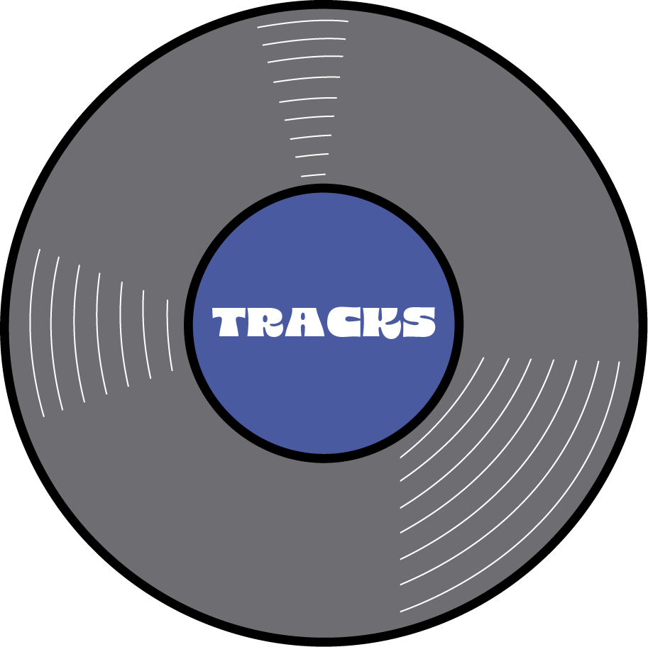

18.7% funk/disco; 18.1% rap/hip hop; 17.5% rock; 13.9% pop; 7.8% house/electronic;
6.6% jazz; 6.6% r&b/soul; 6% folk/acoustic; 4.8% indie
Of 61
artists, the top 3
most-listened-to were
Earth Wind and Fire, Drake, and a tie between Steely Dan and Stevie Wonder.

Of 166 tracks, the
most-listened-to song was
Only a Fool Would Say That.